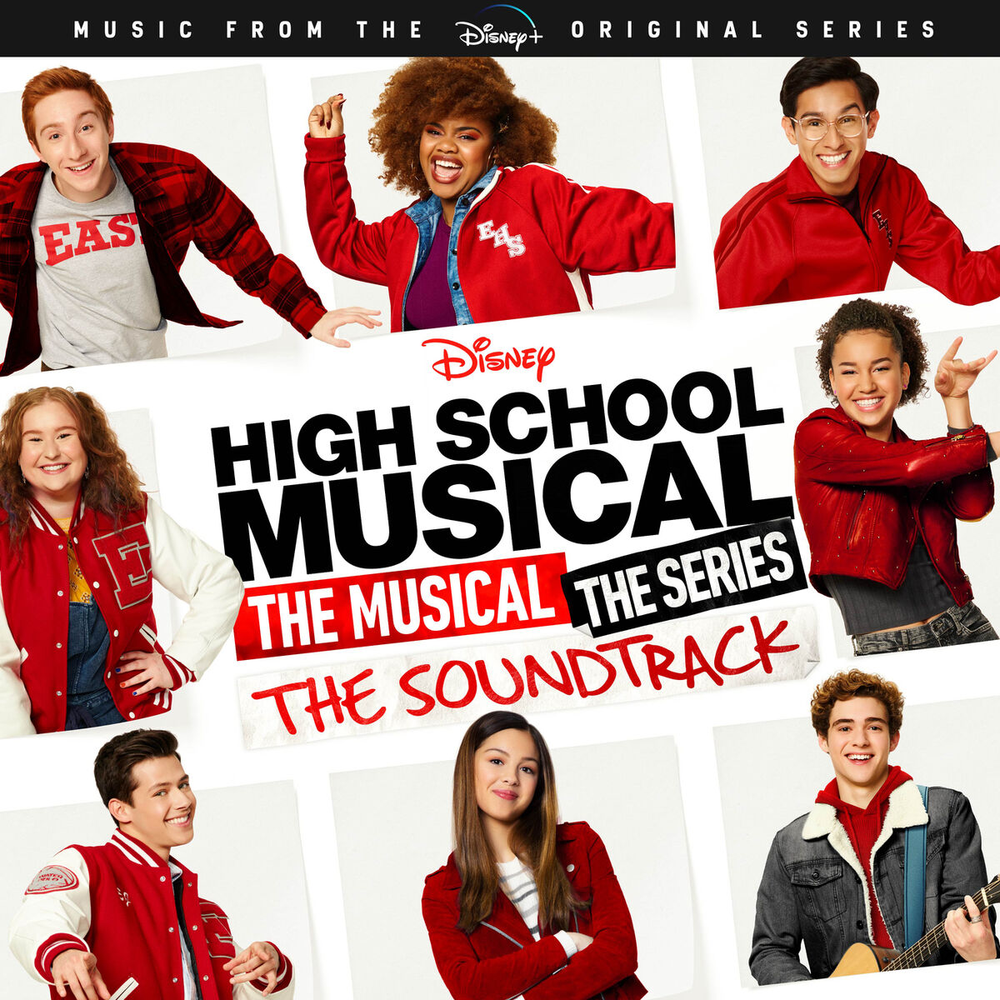

Olivia Rodrigo is an up and coming artist who has seen great sucess after her acting career at Disney, and has become the 54 most listened to artist in the world on spotify, which is qutie the feat.

| Song Name | Ranking | Number of Streams |
|---|---|---|
| drivers license | #1 | 2,249,000,000 |
| good 4 u | #2 | 2,230,000,000 |
| deja vu | #3 | 1,676,000,000 |
Her new ablum has already seen great success, already having one of the songs reach over one billion listens on spotify, and the rest are slowly climbing the ranks as well.
Spotify stats for Olivia Rodrigo Olivia Rodrigo Merch